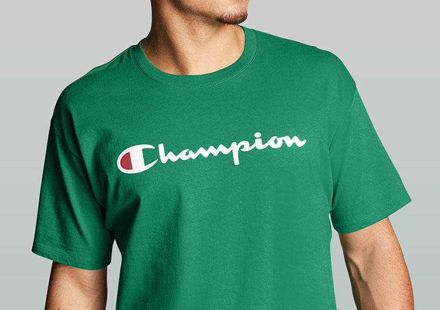
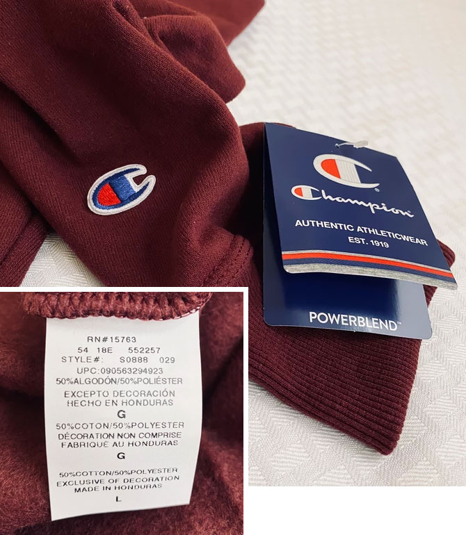
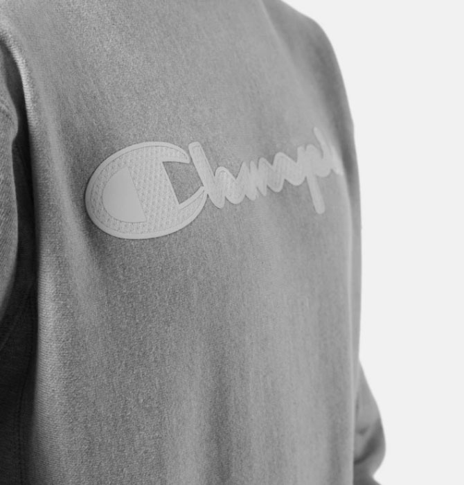
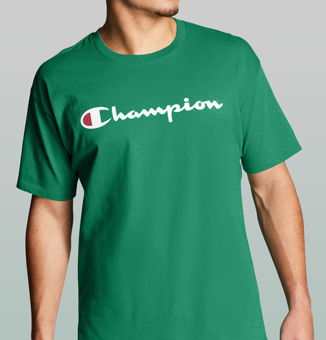
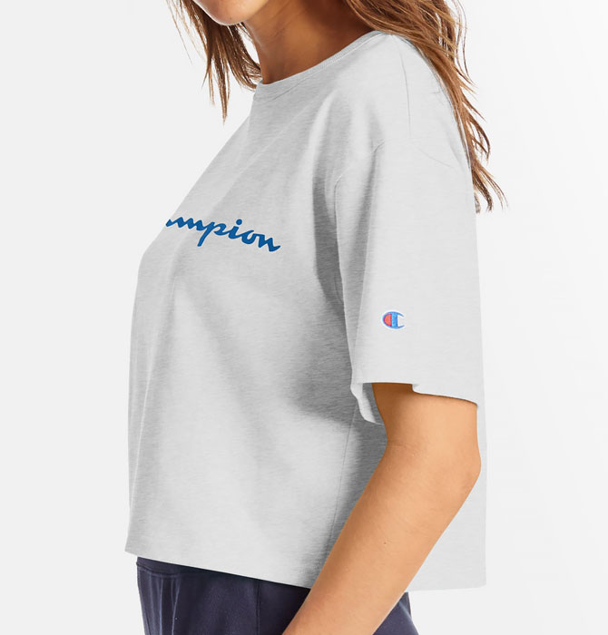

CHAMPION 소재 - US Line편
5.2oz? 9oz? 그게 뭐야?
이번 매거진에서는 Champion 소재에 대해 알아보려고 한다. 인터넷에 보면 챔피온 소재에 대해 각종 갑론을박이 이어진다.
특히 어떤 옷이 몇 온즈이고 두께감이나 핏이 어떤지 궁금해하는데! 오늘은 먼저 US Line에서 대표적으로 사용하는 소재들을 알아보자!
특히 어떤 옷이 몇 온즈이고 두께감이나 핏이 어떤지 궁금해하는데! 오늘은 먼저 US Line에서 대표적으로 사용하는 소재들을 알아보자!

Powerblend
9oz, midweight
US Line에서 맨투맨과 후드티, 그리고 바지에 주로 쓰이는 소재다.
안쪽면에 브러쉬되어 있어서 아주 부드럽다는 점이 특징이다.
무게는 9oz로 midweight으로 분류된다. 두껍지도, 얇지도 않은 소재여서 레이어링해서 입거나
따뜻한 날씨에 단독으로 입기에 제격이다. 필링에 강하고 원단 수축이 적어서 내구성이 매우
뛰어나다. 면 50%, 폴리에스터 50% 혼방이며 Eco재활용된 원사가 10%까지 사용되어
친환경적인 소재라는점도 기억하자!

Reverse Weave®
12oz, Heavyweight
글로벌 각 라인에서 출시되는 종류는 몇가지 되는데, 여기서는 US Line의 Reverse Weave®만을
다룬다. Powerblend와 마찬가지로 맨투맨, 후드티, 그리고 바지에 주로 쓰인다.
무게는 12oz로 heavyweight으로 분류된다. 혼용율은 면 82%, 폴리에스터 18%이다.
Powerblend보다는 두께감이 있어서 입었을 때 각이 잡히고 간절기에 단독으로 입어도 충분한
정도이다. Reverse Weave®라는 말 그대로 기존과는 반대로 직조가 되어 자세히 살펴보면
wale (골)이 가로로 형성되어 있다. 챔피온 옷을 보고 사이드패널과 wale의 방향을 통해
Reverse Weave®인지 쉽게 알 수 있다.

Classic Jersey
5.5oz, Cotton 100%
챔피온의 대표적인 저지 소재이다. 얇은 소재로 반팔이나 긴팔쭉티에 주로 사용된다.
무게는 5.5oz로 위의 두 소재와 비교했을 때 확실히 두께감이 얇다.
혼용율은 면 100%이다. 소재 조직의 밀도가 높아서 내구성이 뛰어나고 부드러운 특징을
가지고 있다. 오랜 기간 세탁하고 착용해도 옷의 수축이 없는 것이 장점이다.

Heritage Jersey
7oz, Cotton 100%
Classic Jersey와 함께 많이 쓰이는 저지 소재이다. Classic Jersey보다 두께감이 있고 밀도가
높은편이어서 각 잡힌 티셔츠를 찾는 사람에게는 제격이다. 무게는 7oz이며 혼용율을 동일하게
면 100%이다. 주로 US Life Line에서 사용되며 다채로운 디자인이 출시된다.
일상생활에서 입기에 최적화된 소재이다. 가격대는 Classic Jersey 보다 조금 비싼편이다.
국문 English 공백 포함 최대 40자 두 줄 노출
국문 English 공백 포함 최대 40자 두 줄 노출